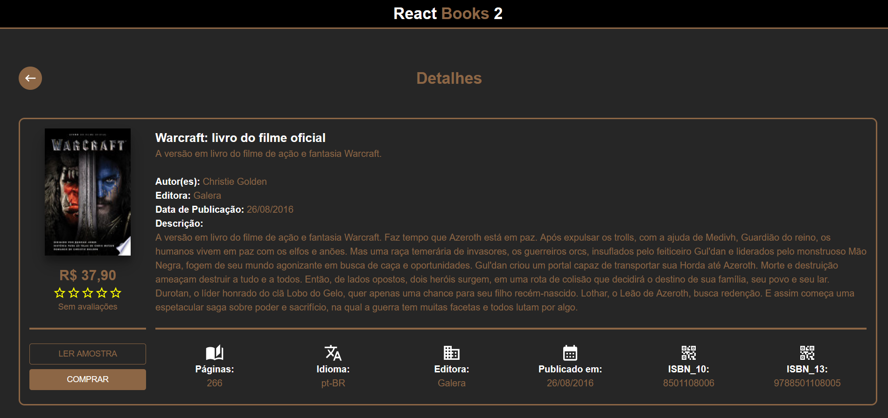
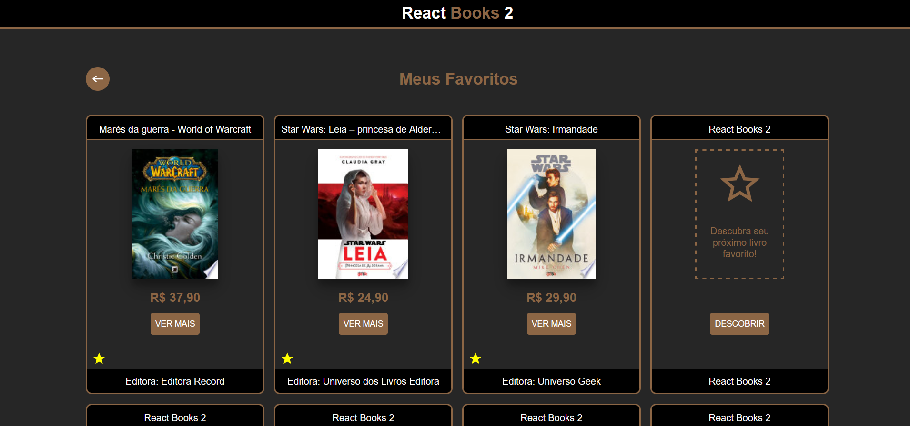
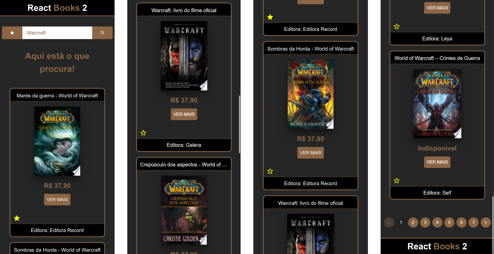

React Books 2
Status: Completo
Ver Código TestarO que me levou a construir o projeto?
Diante da ideia de construir um projeto que refletisse tudo que aprendi durante a minha última oportunidade profissional como Front-End, surgiu o React Books 2, onde aplico diferentes tecnologias em conjunto, nesse mesmo período estava participando de uma capacitação em UX/UI. Uma união de dois mundos, o Front e o UX/UI, aqui está o primeiro projeto de muitos que virão.
 Desafios
A responsividade deixou de ser uma opção a muito tempo e hoje é um item obrigatório, aqui apliquei diversas técnicas para manter um layout flexível e acessível, incluindo até mesmo uma paginação dinâmica baseada em resolução.
Tecnologias
- React
- Material UI
- Typescript
- Jest
- Axios
- Axios
- JavaScript
- HTML5
- CSS3
- GIT
Aprendizado
- Paginação dinâmica baseada em resolução da tela
- Construção de theme do Material UI
- UX/UI (Style Guide)
- Carrossel com React Slick
- Rotas dinâmicas com React Router
- Criação de mappers para garantir a integridade dos dados
- Responsividade
- Testes unitários de componentes com Jest
- Integração com API com Axios